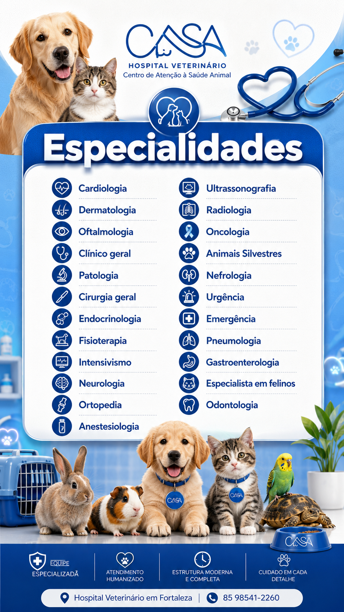

Centro de Atenção à Saúde Animal
Hospital veterinário 24h em Fortaleza.
Atendimento de urgência, exames e especialidades em uma clínica feita para cuidar do seu pet com calma, precisão e presença.
Sobre nós
Uma casa para quem ama seu pet.
A CASA nasceu para ser um lugar de confiança em momentos simples e também nos mais delicados. Aqui, cães, gatos, aves e outros pets são recebidos com atenção real, sem pressa e com a estrutura que um hospital 24h precisa ter.
Quem chega encontra equipe atenciosa, áreas pensadas para reduzir o estresse e profissionais que tratam cada caso com responsabilidade. O cuidado começa antes da consulta: começa no jeito de escutar.
Falar com a equipe
.png)
Estrutura completa
Equipe preparada para o cuidado de verdade.
Da urgência ao acompanhamento especializado, a CASA combina plantão, exames e atendimento humanizado para orientar o tutor com clareza.
Agendar atendimento
Serviços
Especialidades sem excesso de informação.
Uma lista mais direta para o tutor encontrar o que precisa e chamar a equipe pelo WhatsApp com o serviço já selecionado.
Depoimentos
Confiança que passa de tutor para tutor.
Contato
Conte quem é seu pet.
Envie nome do tutor, nome e espécie do animal, além do serviço desejado. A mensagem já sai pronta para o WhatsApp da equipe.